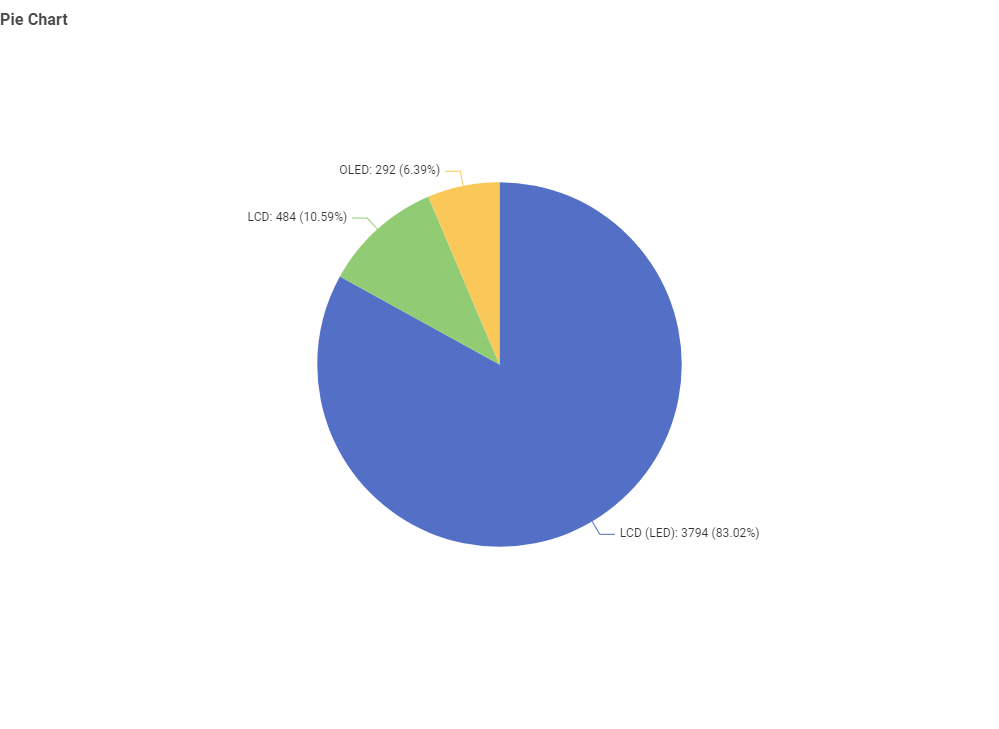
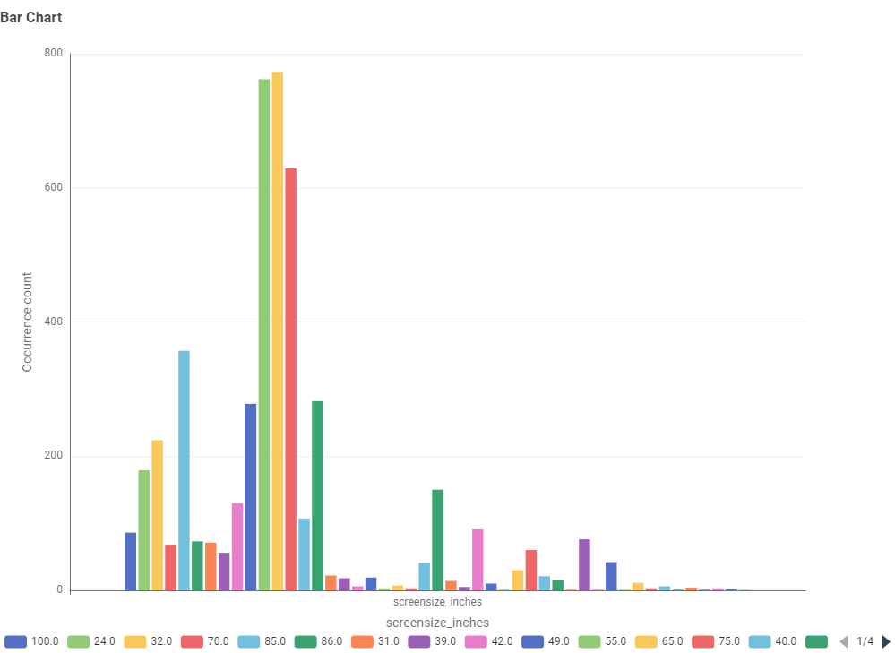
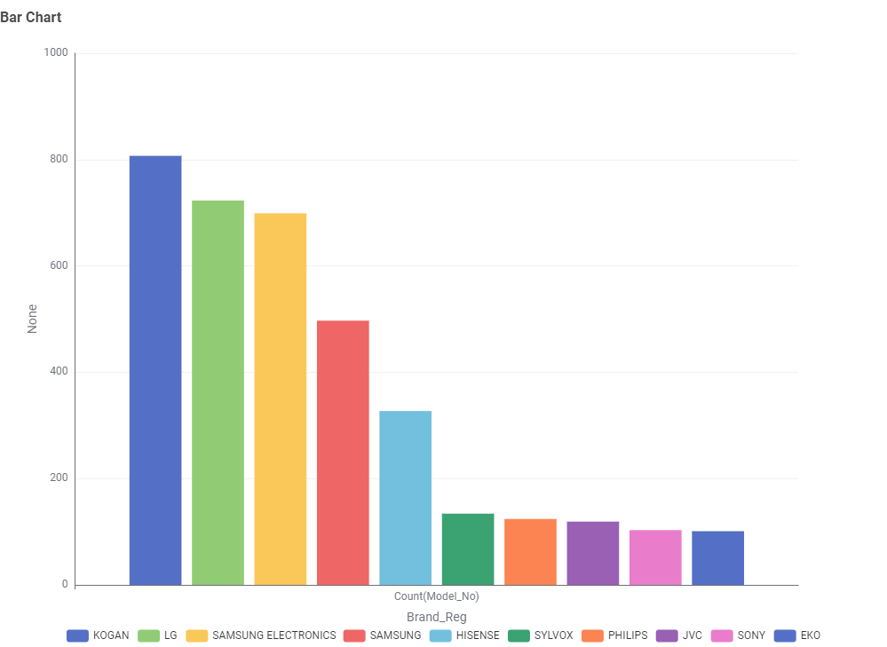
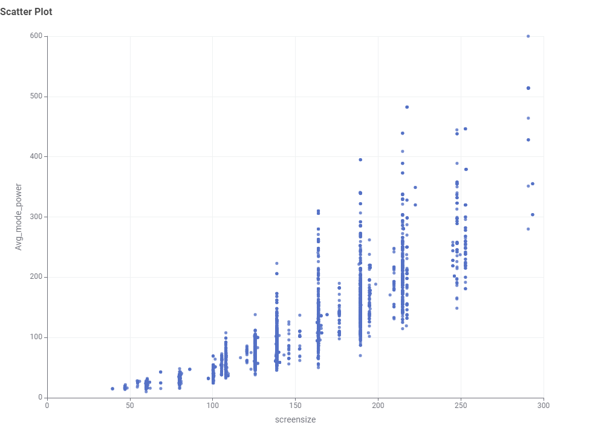

Television Energy Tips
Size & technology matter. Larger screens and older tech (e.g., plasma) use more energy. Modern LED/LCD and OLED sets are generally more efficient.
- Use the TV’s Energy Saver or Eco mode and reduce brightness where comfortable.
- Disable “always-listening” voice features if you don’t use them; they can add standby draw.
- Consider star rating and annual kWh on the energy label when purchasing.
Typical TV Energy Use in Australia
| Screen Size | Typical Power (Watts) | Highly Efficient (5-7 Stars) | Average Model (3-4.5 Stars) | Estimated Annual Cost |
|---|---|---|---|---|
| 32-inch | 30W - 45W | ~110 kWh/year | ~160 kWh/year | $31 - $45 |
| 43-inch | 50W - 65W | ~180 kWh/year | ~240 kWh/year | $51 - $68 |
| 55-inch | 60W - 100W | ~215 kWh/year | ~360 to 520 kWh/year | $61 - $148 |
| 65-inch | 90W - 140W | ~320 kWh/year | ~470 to 630 kWh/year | $91 - $180 |
| 75-inch+ | 140W - 180W+ | ~510 kWh/year | ~650 to 800+ kWh/year | $145 - $228+ |
TV Energy Insights: Data Story
This section presents findings from the Australian Government’s Television Energy Rating dataset. The aim is to help Australian consumers make informed decisions about technology, size, brand, and efficiency.
Chart 1: What TV technologies are most common?

Most TVs in Australia are LCD LED, while OLED is less common.
Chart 2: What screen sizes are most frequent?

55-inch TVs are the most common, followed by mid-range sizes like 42–50 inches.
Chart 3: Which brands dominate the market?

Samsung, Sony, and Hisense have the largest number of models on the Australian market.
Chart 4: Which screen type uses the least power?

LCD TVs consume the least power, while OLEDs use slightly more but offer higher performance.
Chart 5: What is the relationship between screen size and power use?

Larger TVs use more power — the relationship is clearly positive.
Chart 6: What is the relationship between star rating and screen size?

Star ratings are fairly distributed across all sizes; bigger TVs can still be efficient if well designed.
Conclusion
When choosing a TV, balance size, brand, and efficiency. A 55-inch LED TV is common and energy-smart for most households.